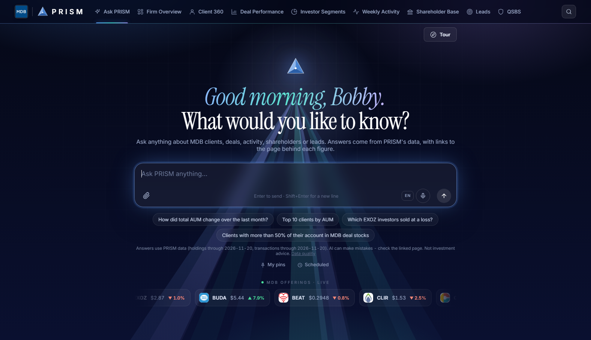

I'm not a software developer. I used AI as my engineering partner to build PRISM, my firm's reporting and intelligence platform, and gave it an AI assistant the whole team can talk to.
Every client and deal number at MDB Capital came from the back office as eight separate reports, each with its own layout, its own dates and its own way of naming accounts. Only our Trading Operations team worked with them.
So any time management needed something, even a simple question like "what does this client hold?" or "how are our deal investors doing?", they had to ask Trading Operations, and someone there had to dig through the reports by hand. Every single time. It slowed everyone down and pulled that team away from their real work.
I knew what the numbers had to mean, which accounts belonged to the same person and what the team needed to see. Working with Claude, I built a pipeline that checks each new report set, combines everything into one dataset and reconciles it against the custodian's own figures, to the cent.
Holding the data to that standard surfaced errors nobody had caught, such as a system migration that had quietly doubled every client's holdings and cancelled trades being counted twice.
Ask PRISM is the AI assistant inside the platform. Anyone on the team can type or speak a question in English or Spanish, attach a spreadsheet or a screenshot, and get an answer with a link to the page behind every figure.

The Ask PRISM home screen. The platform is password-protected because it holds real client data, so this is a look at the front door only.
I've already started the next project: our own CRM, built to work hand in hand with PRISM, so client relationships and client data finally live in the same place.